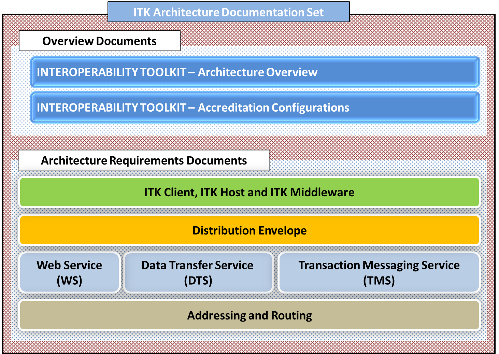

MESH Transport
The behaviour of this Transport Service is very similar to JMS based Message Queue. This document defines the requirements for MESH Standards, Address Resolution and Routing aspects. The ITK Distribution Envelope is put as a data file on this transport.
There are necessary details of MESH Client Configuration Requirements made available in this document.
| Download » | |
|---|---|
| ITK MESH (pdf format) | View |